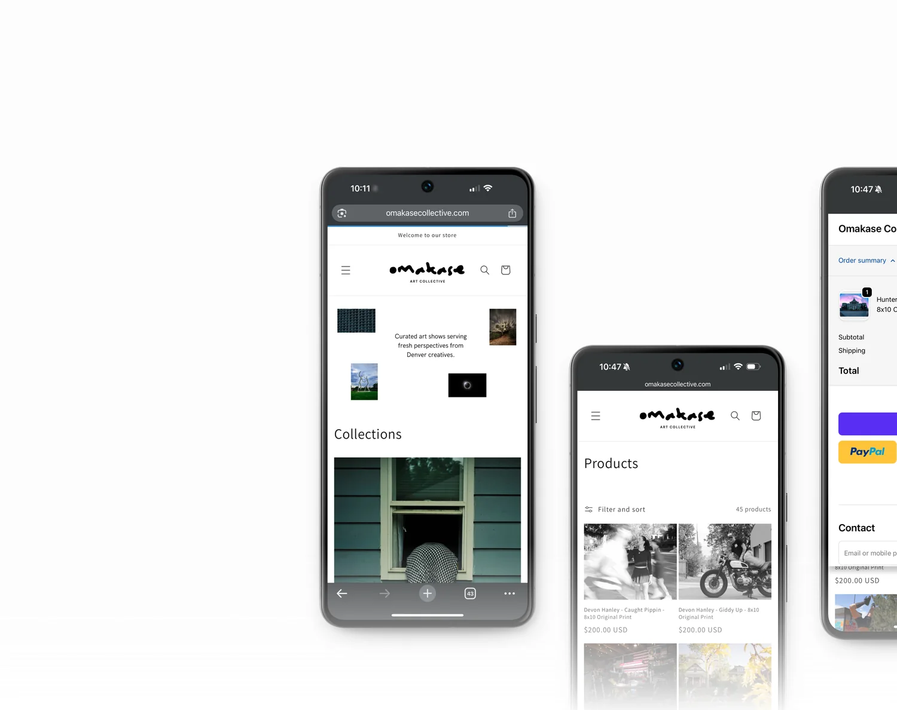
Omakase Art Collective
E-Commerce Website DesignOmakase Art Collective is a Denver-based creative platform that connects local artists with their community through pop-up exhibitions and an online marketplace. As Creative Director and UX/UI Designer, I led brand strategy, marketing, and website design — developing a cohesive visual identity and seamless digital experience that helps artists share, sell, and celebrate their work.
View WebsiteCarefully curated art gallery supporting local up and coming artists in the Colorado area.
Product Organization
Once a product page is created, it enters a backend workflow where each photograph is automatically organized by series number, series category and Photographer. Every contributing photographer has a dedicated profile page featuring their available work alongside a personal biography.
This structure helps establish credibility for both the artist and the platform while creating a more personal connection between shoppers and creators. By providing insight into each photographer's background, process, and body of work, the experience encourages discovery and fosters engagement with Colorado's creative community.
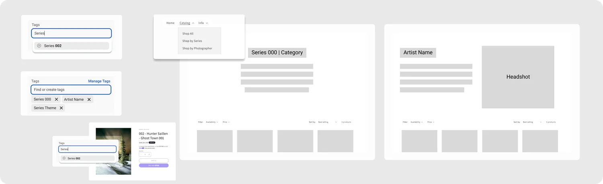
Filtered Catalog
Each art show featured different artists, and a theme that the artists worked under. The catalog has been filtered by artists and photo series. In addition, each gallery offers further filtering based on availability and price.
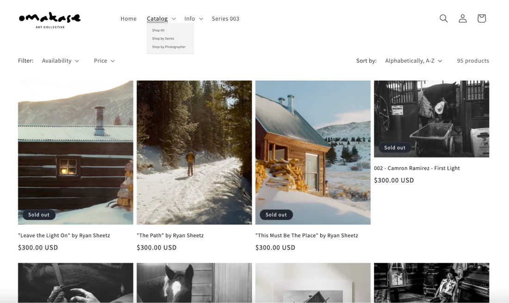
Artist Biography
Artists' work was tagged based on who they are; each individual had a biography and their own profile page for their artwork.
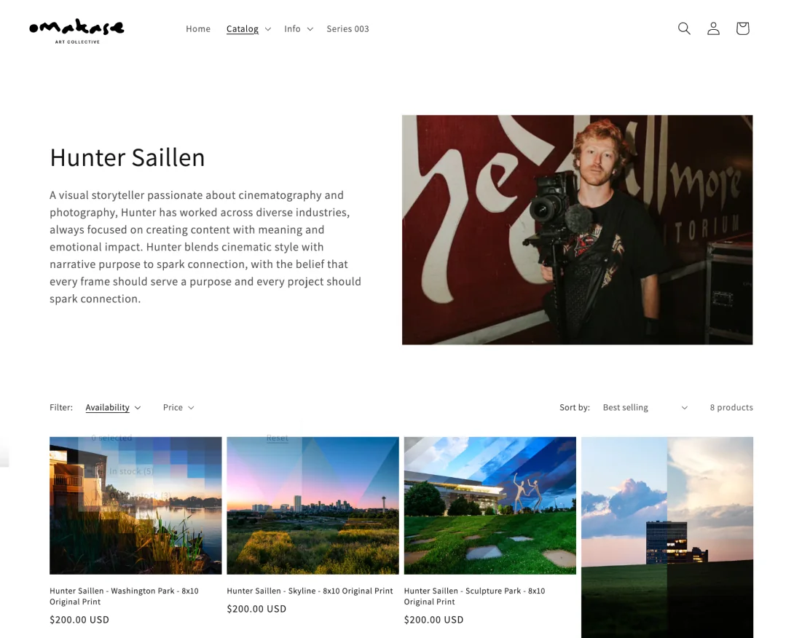
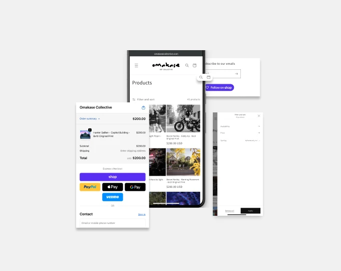
Design Systems
The design system was built around a comprehensive set of reusable components and layouts designed for clarity, consistency, and simplicity. By leveraging familiar Shopify user patterns and aligning them with Omakase Collective's minimal brand identity, the experience feels intuitive and easy to navigate.
This approach reduced friction throughout the shopping journey while creating a scalable system that can support future series, artists, and product offerings without sacrificing brand consistency.
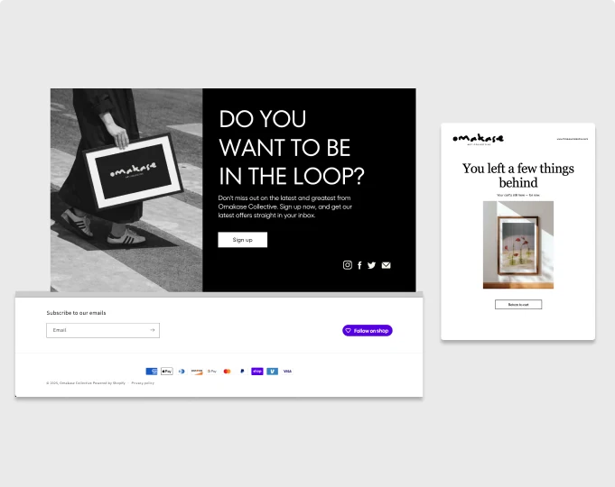
Newsletter Sign Up
The newsletter helps Omakase Collective build lasting relationships with collectors and supporters by offering early access to print releases, event announcements, and artist features. It also creates a direct communication channel to drive engagement beyond social media.
The Silent Auction
Designed and assisted in developing a mobile auction experience for exclusive event artwork, creating a frictionless bidding process that connected bidder information with automated winner notifications and purchase fulfillment.
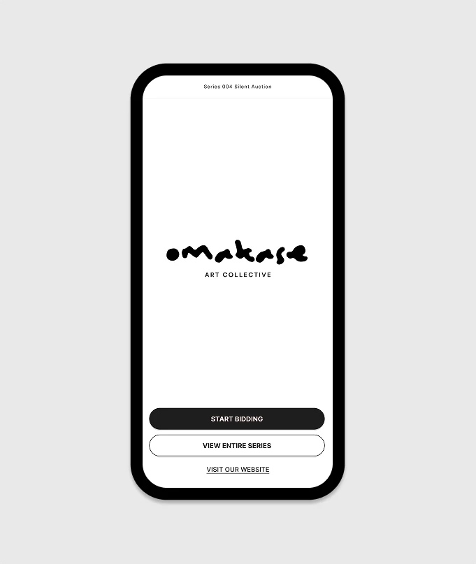
Setup
High-volume art inventory with unproven pricing and friction-heavy flow.
System
Treated the first two exhibitions as live high-fidelity prototypes to harvest direct qualitative data from artists and attendees.
The Structural Shift
Overhauled pricing logic (Silent Auction) and inventory curation.
The Results
+61% inventory sell-through rate by show two; scaling to +52% by show three.
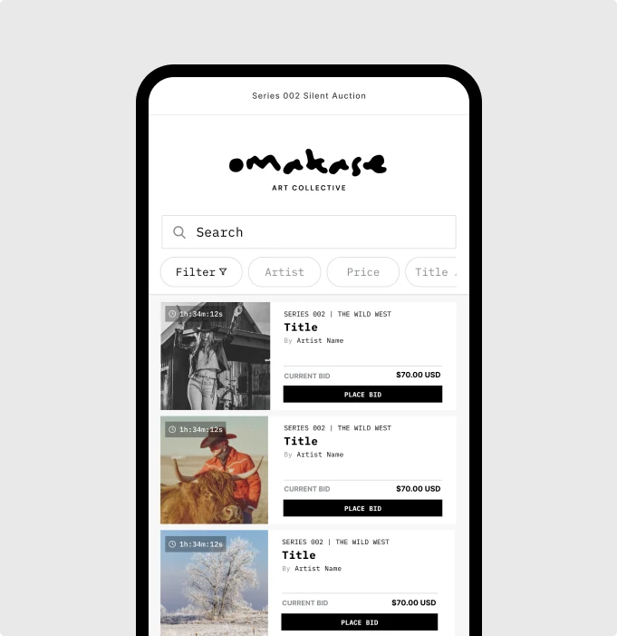
Silent Auction Catalog
Users can quickly browse all available artwork through a mobile-first auction experience designed specifically for event attendees. Search, filtering, and sorting options make it easy to discover pieces by artist, title, or price, while live bidding information keeps users informed throughout the auction.
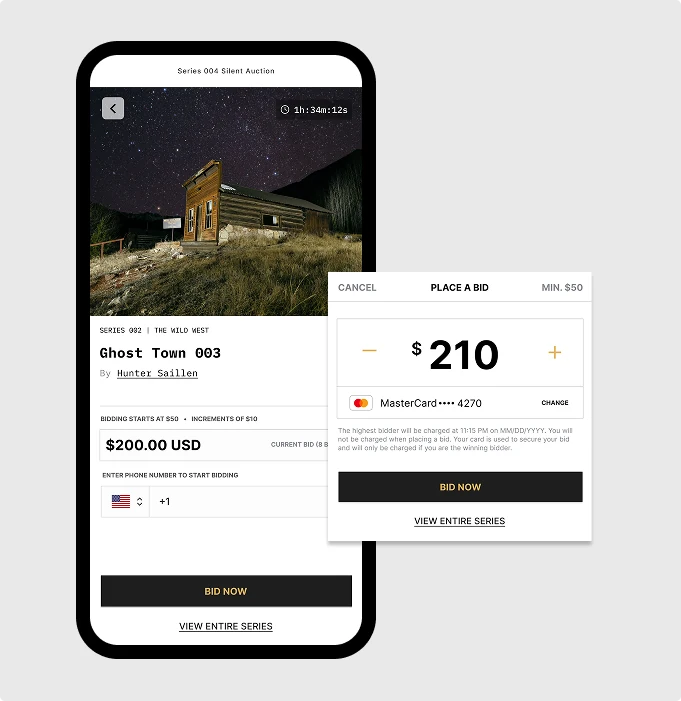
Mobile Bidding Experience
The bidding flow was designed to remove friction from the auction process by allowing guests to place bids directly from their phones. Real-time bid updates, countdown timers, and simplified checkout pathways encouraged participation while creating an engaging and competitive auction environment.
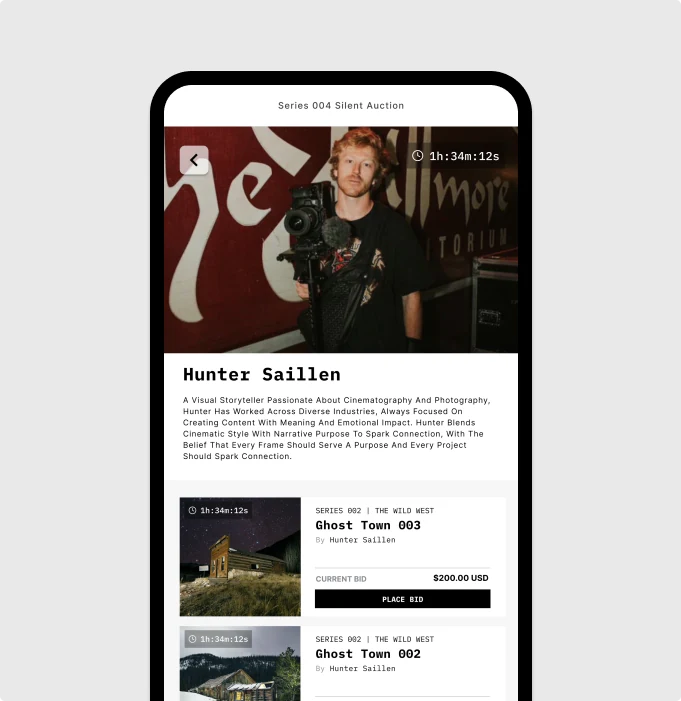
Artist Profiles
Artists are featured through dedicated profile pages, helping personalize the buying experience and connect collectors with the creatives behind the work. This reinforces the value of supporting local artists and building meaningful community connections through art.
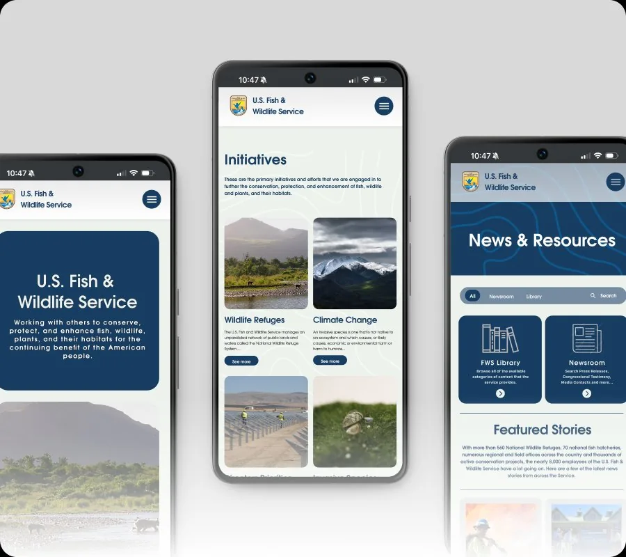